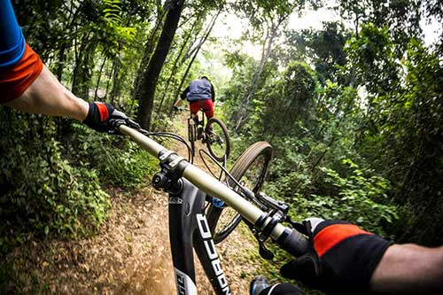
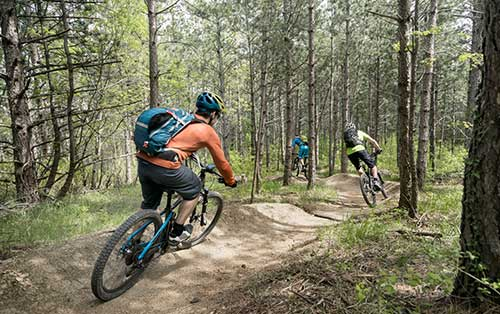

Rusty Spur Trail
Spectacular views and gently rolling terrain on wide, doubletrack make this ride perfect for beginners and families. Many riders are able to try the Rusty Spur Trail, just off the main loop, as their first foray into singletrack terrain. Whether you’re new to the sport or just looking for an easy cruise, our guides will be happy to help you improve your skills.
Available Daily
Skill Level : Easy
Distance : 7-10 miles
Slickrock Trail
The Slickrock Trail is one of the most unique rides anywhere. A series of petrified sand dunes has formed the trail into an 11 mile long roller coaster ride. This trail has incredible vistas as well as steep ascents, descents and side slopes that will test your mountain bike skills and fitness.If you are interested in riding this world famous trail, but a bit daunted by its reputation, our slickrock-savvy guides can help! We know this terrain and our experienced instructors would be happy to help you improve your technique.